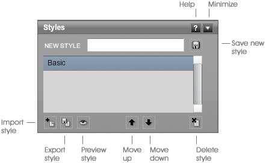

Online Documentation
Interface
Project Bar
The project bar displays the current project and selected style name. It also has shortcut buttons to save, open and toggle the tool properties panel.
Styles Panel

The styles panel gives you quick access to all of the styles in your project. Using this panel, you can also import and export styles, create new styles, and rearrange the order of the styles.
To create a new style, type a new name into the 'new style' text field. Then click the save button. This new style will be added to the list. Just make sure you save the project or the style will be lost when you close Livebrush.
Select one or more styles to start drawing using those styles.
To view a style as you change its properties, click the Preview button <insert button capture here>
Style Preview Window
This preview window provides a way to preview a currently selected style. The preview will automatically update every time you select a different style or make a change to a style. Note that the preview is mainly for seeing how a brush will look. It will not be an accurate representation of how the brush will behave.
The preview window can be opened from the Window menu or by clicking the eye button on the styles panel.
Change or remove the preview background color using the controls located in the top left corner of the preview window.
Quickly hide/show the preview window with CTRL+P (MAC: COMMAND+P).
Layers Panel
A layer can be a single line, image or color fill. The layers panel lets you duplicate, rearrange, remove, transform and flatten layers. Flattening one or more layers creates an image copy of those layers.
Layers are arranged in a list. This list reflects the visual stacking order of graphics on the canvas. For example, moving layer B above layer A will make the graphic on layer B appear above the graphic on layer A.
The layers panel also lets you change the blend mode, opacity, and color of a selected layer. The opacity goes from 0 to 100, where 0 is invisible and 100 is completely visible. To tint a layer, click the color swatch and choose a color. The number to the left of the color swatch allows you to specify how much tint is applied to a layer (0-100%).
A layer's blend mode specifies how a layer will 'blend' with the layers below. Note that blend modes may not be accurately rendered for selected layers.
Back to top | More help
Tool Settings Panel

The tool settings panel is located between the styles and layers panels. The contents of this panel depend on which tool you have selected.
When using the Transform Tool, this panel provides access to transformation properties for the currently selected layer or line points.
Preferences
The tool preferences panel is accessed from the top left of the project bar.
- Cache Lines: Un-check this box for more accurate rendering while drawing. Check it for better performance.
- Cache Decos: Check this box for better performance. Un-check it for more accurate rendering while drawing.
- Automatically Check for Updates: With this option checked, Livebrush will check if there are software updates available on launch. This action requires an internet connection. You can choose to disable this option and check for updates manually using the Help menu (Help > Check For Updates).